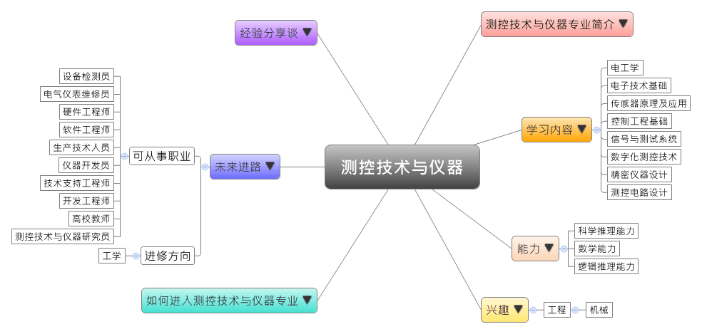

- 专业大观园
-

- 专业介绍
-
什么是测控技术与仪器专业？
测控技术及仪器专业是仪器科学和控制科学交互作用而成的综合学科。测控仪器会采集、整理、处理自动化系统上的信号、随后显示或发出控制信号的过程。本专业知识面宽广，具有优秀的产业变迁适应能力和宽广的发展空间，所以在行业间的工作转换比较容易。在职场上，此专业毕业生可在智能仪器仪表、测试计量技术与仪器、计算机测控技术等方面从事测量与控制领域内相关技术、仪器与系统的设计制造、科技开发，以及应用研究等的工作。随着科技进步，现代测控技术广泛应用在生活中，例如银行金融系统的监控、交通工具的运行状态监控，甚至是远程设备故障的诊断，以及各种电、水、燃气、热能的自动抄表。
测控技术与仪器专业除了训练学生具备测控技术与仪器专业的理论与知识，也通过精密仪器设计制造、测量与控制应用的实务训练，让学生能从事测控技术开发、仪器设计与制造、设备维修与改善等工作，并成为测量与控制领域的专业人才。
测控技术与仪器操作示范 校外实习－参观测控技术中心
- 学习内容
-
测控技术与仪器专业专业学生主要学习各种精密仪器中光学应用、机械与电子学的理论与知识，以及测量与控制相关的理论和测控仪器的设计，搭配现代测控技术和仪器应用的实务训练，让学生具备测控技术、仪器应用，以及系统设计与开发的能力。
本专业学习方向通常分为两类：仪器科学类和技术类；有些学校也进一步开设智能机械设计或智能仪器设计等课程，为学生未来就业做好准备。测控技术与仪器专业主干课程有：电工学、电子技术基础、传感器原理及应用、微机原理及应用、控制工程基础、信号与测试系统、数字化测控技术、精密仪器设计、测控电路设计、微机电系统……等。此外，学生须加选一门以上的实践教学课程，如：金工、电工、电子实习等进行选修。
本专业可以习得的知识与获得之能力、技能列点：第一，具备扎实的机械学、电子学、光学、传感器技术等测控技术相关的理论与知识；第二，熟悉光学、电机、电子、计算机等相关领域，并具有现代测控系统与仪器设计和开发的能力；第三，具备创新意识、较强的外语应用能力，能掌握最新的测控技术和仪器的发展现况。
- 能力
-
测控技术与仪器专业学生，需具备以下能力：
相关性向能力 说明 科学推理能力  具有当代测控技术的能力
具有当代测控技术的能力
拥有现代测控仪器的设计能力
掌握光、机、电、计算机相结合的实验研究能力数学能力 有数学推导的能力
对测控信息进行计算与处理的能力逻辑推理能力 具备批判与独立思考的能力
能够提出改善测控精准度的方法并进行验证
具有以计算器语言编程解决逻辑推理问题的能力
- 兴趣
-
若你对下列活动或事物有高度兴趣，可考虑进入测控技术与仪器专业学习：
工程 机械 喜欢实际动手操作机器或机具
能够按照正确步骤操作精密仪器
对资讯丶电子机械相关的事物感兴趣
- 如何进入此专业
-
下面列举开设测控技术与仪器专业的211工程重点大学院校：
- 未来进路
-
可从事职业
测控技术与仪器专业的毕业生适合在航天航空、兵器、机械、电子、通讯、交通等领域从事测控仪器、计算机辅助测试、信息处理，以及工业过程控制的研究设计、制造和相关应用工作。测控技术与仪器专业学生可到高等院校从事与本专业相关的教学研究工作；亦可到中外企业、科研院所等部门从事检测技术与自动化装置的理论研究与技术开发、自动化精密仪器、监测仪器、控制或生产系统的设计与开发等工作。在工作职场上皆能发挥系统研发与设计、外语应用能力等专长：
行业 职业 专用设备制造业（电子和电工机械专用设备制造） 设备检测员、技术监督员、电子工程师、硬件工程师、电气工程师、生产技术人员 仪器仪表制造 仪器开发员、仪表工程师、测试工程师、电气仪表维修员、技术支持工程师、计量工程师、生产技术人员 软件和信息技术服务业 销售工程师、软件工程师、开发工程师 教育 高校教师 科学研究 测控技术与仪器研究员 进修方向以下列举测控技术与仪器专业毕业生可以继续修读之学科门类、一级学科与硕士点：
学科门类 一级学科 硕士点 工学法学 仪器科学与技术测试计量技术及仪器、精密仪器及机械、地球物理勘探仪器及方法、电气测试技术与仪器、武器探测与精确制导、生物医学仪器 控制科学与工程检测技术与自动化装置、模式识别与智能系统、网络控制与通信、导航、制导与控制 工程（专业硕士）仪器仪表工程、控制工程
- 经验分享谈
-
用20年完成惊天逆转的中国全球定位先驱——谭述森
“中国干嘛要建立自己的导航系统呢？直接买美国的成熟产品就可以。”这不仅仅是一个事实，还是一种否定，否定中国能够建设自己的卫星导航系统。于是临危受命的老专家谭述森院士，于1994年开始了中国的“北斗”事业，这是一项当代的“两弹一星”的国家战略工程。他们所要面临的第一个目标就是，国际上的大国们已经占领了导航用频率资源。谭述森院士利用自己的国际威望和详实的论证，充分证明了北斗和其他系统之间的信号是兼容并用，而且是可以重迭的！这是利用国际规则和惯例为北斗争取的第一张入场券。
而随后就是北斗的定位方法，多数国家都是3星全球定位法，而中国创新的“双星定位”，这说起来容易做起来很难。北斗一代系统建设初期，谭述森院士创造性提出北斗系统建设方案，使我国仅用两颗卫星和地面高程数据库地面站就实现了为中国及周边地区的定位服务。这被当时西方的媒体罕见称赞为“中国卫星导航系统的惊天逆转！因为他们没有国外支持，多国拒绝合作，封锁消息。中国人自己做出来了！”
目前中国北斗正在向2020年全球覆盖的目标阔步前行。这些的实现都离不开谭述森院士和他的团队长达22年的艰苦攻关和努力奋斗。如今，谭述森院士已经年过七旬，为了中国的北斗事业，3次延长退休年龄。谭述森院士就是这样的带头人，他给中国带来的不仅仅是一套覆盖全球的“北斗导航”系统，更是中国人不怕困难，敢于突破，甘于奉献的最佳写照！ 【资料来源：每日头条 美国说中国绝对不可能搞北斗系统：一高人用了20年完成惊天逆转.】